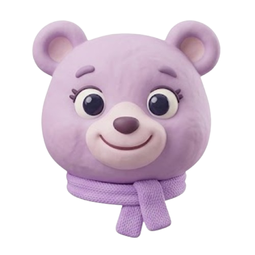
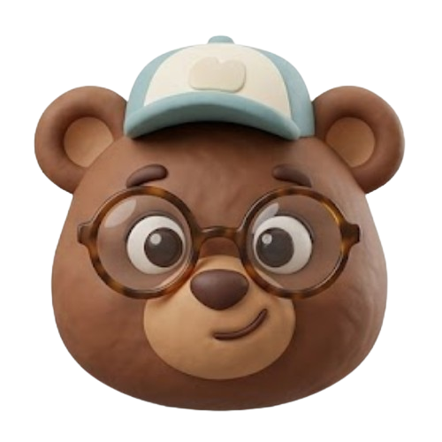
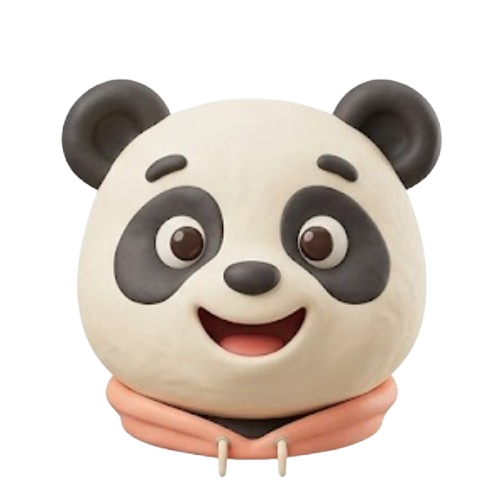
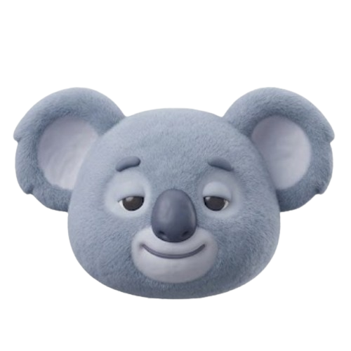

ZelluApp · Dashitecnology · primeiro cliente white-label
Mundo Mental Care
Companion digital de bem-estar emocional para o dia a dia do trabalho. Criado pela Dashitecnology, no núcleo ZelluApp — adaptado para a Mundo Mental como primeiro cliente white-label.
Cuidado emocional no ritmo do trabalho



Roteiro · 10–15 min
O que vamos percorrer
1. Contexto
Problema corporativo e por que o bem-estar precisa de hábito diário — não só campanhas.
2. Produto
Como o companion, o RH e a operação se conectam em uma única plataforma.
3. Tecnologia
Arquitetura ZelluApp, IA com consentimento, privacidade e o núcleo licenciável.
4. White-label
Como a Dashitecnology adapta o núcleo para clientes — começando pela Mundo Mental.
Sem métricas de tração nesta versão — o foco é o produto e o modelo white-label já em aplicação.
Oportunidade
Empresas investem em saúde mental — e o hábito some entre as sessões
Baixa adesão
Programas de wellness existem, mas o colaborador raramente mantém contato leve e frequente.
RH sem visão útil
Falta sinal agregado (e ético) sobre tendências de equipes — sem invadir a privacidade individual.
Gap clínico × dia a dia
Entre consultas e campanhas, o cuidado emocional não acompanha a rotina de trabalho.
O produto não substitui psicólogo, psiquiatra ou terapia. É companion de bem-estar e autocuidado.
Proposta · núcleo ZelluApp
Uma plataforma SaaS B2B de companion emocional
O núcleo ZelluApp, da Dashitecnology, entrega companion, RH e operação B2B. Nesta versão, a marca e a experiência estão adaptadas para a Mundo Mental como Mundo Mental Care — nosso primeiro cliente white-label.
- Uso diário pelo colaborador (mobile e desktop)
- Painel de RH só com indicadores agregados e anônimos
- Portal administrativo para empresas, licenças e operação
- IA na nuvem apenas com consentimento explícito
Para o colaborador
Companion acolhedor, sem tom clínico.
Para o RH
Tendências de equipe, nunca o diário pessoal.
Para o cliente white-label
Marca e experiência adaptadas — como na Mundo Mental.
Arquitetura de produto · ZelluApp
Três níveis, um só núcleo
Cada nível tem telas e permissões próprias. O RH nunca acessa chat, diário ou humor identificado. No white-label Mundo Mental Care, a operação segue este mesmo desenho.
Experiência do colaborador
Do check-in ao cuidado — em minutos
Check-in
Registro matinal rápido.
Chat
Companion com contexto.
Respiro
Exercício guiado.
Diário
Espaço privado.
Módulo colaborador
O que o companion entrega no dia a dia
Conversa
Apoio emocional cotidiano, tom maduro e não clínico. Sugestões práticas (respirar, água, pausa).
Contexto
Usa check-ins, hábitos, plano e memórias curadas — sem inventar dados e sem texto do diário na IA.
Prevenção
Alertas de tendência para o próprio usuário; camada de crise com orientação a ajuda humana (CVV 188).
Inteligência
IA sob consentimento — com fallback local
O que a IA recebe
Texto do chat + contexto de bem-estar (humor, sono, água, hábitos, plano) — sem nome, e-mail ou diário.
Memória curada
Resumos curtos do que ajuda a pessoa — retenção limitada, sem vigilância e sem conteúdo de crise.
Opt-in no Perfil
IA na nuvem, indicadores no RH e e-mail de lembrete — três booleans independentes.
Módulo RH
Visibilidade ética para a empresa
O RH vê
- Indicadores agregados por equipe
- Adesão e tendências (com mínimo de pessoas)
- Alertas de tendência — nunca individuais
O RH nunca vê
- Texto do diário
- Mensagens do chat
- Humor, sono ou água identificados
Regra de k-anonimato: com menos de 5 pessoas opt-in, métricas sensíveis ficam ocultas.
Dashitecnology · ZelluApp
Núcleo licenciável — com white-label já em produção
- Produto companion — web app mobile/desktop
- Painel RH — agregados e governança de equipes
- Portal Admin — empresas, licenças, convites, métricas de uso
- Camada de IA — proxy, consentimento, memória, crise
- Base LGPD — opt-ins, export, exclusão, retenção
A tecnologia é da Dashitecnology (núcleo ZelluApp). O Mundo Mental Care é a adaptação white-label para a Mundo Mental — nosso primeiro cliente neste modelo.
Por que esta base
Diferenciais do núcleo ZelluApp
Produto fechado
Jornada completa do colaborador + RH + admin — não é só um chatbot.
Privacidade de verdade
Opt-ins, RLS, agregação com k-anonimato e diário fora do prompt da IA.
Operação B2B
Multi-empresa, licenças, convites e papéis (companion, manager, admin, dev).
Tom cuidadoso
Companion de bem-estar — limites claros, sem fingir ser terapia.
IA responsável
Cloud só com opt-in; fallback local; crise com prioridade no servidor.
White-label comprovado
Já adaptado para a Mundo Mental como Mundo Mental Care — primeiro cliente.
Confiança
Privacidade como parte do produto
Controles do titular
- Consentimento essencial + maioridade
- Opt-in IA / RH / e-mail
- Exportar dados e excluir conta
- Revogar consentimento a qualquer momento
Retenção e minimização
- Chat e diário com prazo de retenção
- Memórias curadas com limite e limpeza
- Logs sem dado de saúde desnecessário
- IA sem treino / retenção zero no provedor (quando opt-in)
Para quem licencia o núcleo ZelluApp: compliance e confiança já embutidos — essencial em saúde mental corporativa.
Dashitecnology · ZelluApp
Núcleo pronto — white-label em andamento
Tecnologia da Dashitecnology, núcleo ZelluApp, adaptada para a Mundo Mental como Mundo Mental Care — primeiro cliente white-label.
Vamos alinhar o modelo de licenciamento juntos← → ou setas do teclado · F tela cheia · T tema